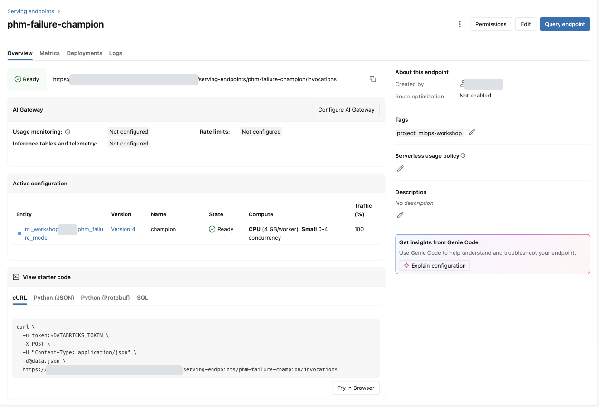
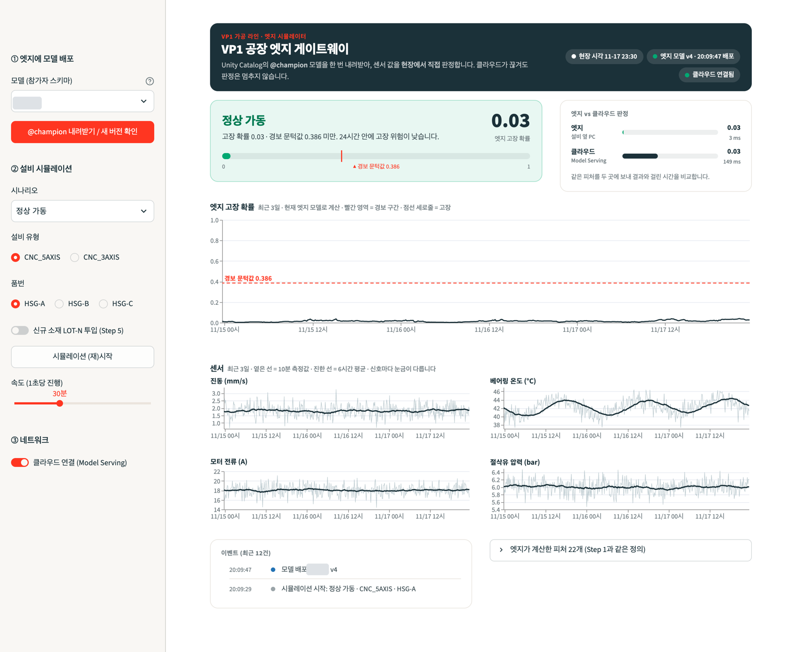
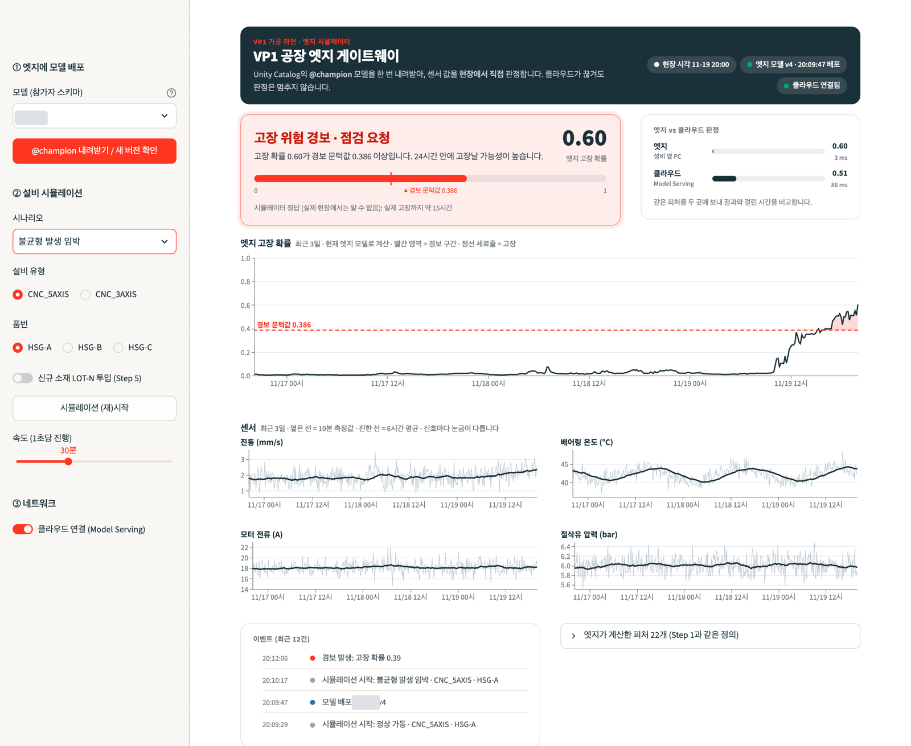
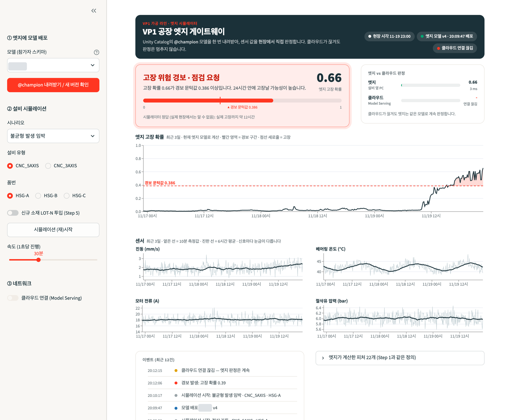

4) 배포: 배치 · 실시간 · 엣지¶
세 방식은 @champion 모델에서 출발합니다. 배치는 다음 실행에 별칭을 다시 읽고, 엣지 앱은 @champion 내려받기 / 새 버전 확인을 다시 눌러야 새 모델을 씁니다. Model Serving 엔드포인트는 @champion이 가리키는 버전 번호로 만들어지고, 새 버전을 쓰려면 엔드포인트 설정을 그 버전으로 갱신합니다(오늘 엔드포인트는 진행팀의 공용 모델로 고정).
| 방식 | 언제 쓰나 |
|---|---|
| 배치 추론 | 몇 분~몇 시간 지연이 괜찮을 때. 가장 저렴합니다 |
| 실시간 (Model Serving) | 다른 시스템(MES·대시보드 등)이 REST API로 바로 물어볼 때 |
| 엣지 | 현장 망이 끊길 수 있을 때, 지연이 짧아야 할 때, 데이터가 공장 밖으로 나가면 안 될 때 |
1단계 - 배치 추론: 지금 가장 위험한 설비는?¶
- 노트북을 열고 내 스키마를 입력합니다. Serving 엔드포인트는 진행자가 알려 준 이름(기본값
phm-failure-champion)입니다. - 셀 4-1까지 실행합니다.
mlflow.pyfunc.spark_udf로 모델을 Spark 함수로 만들어 최근 24시간 전체 행에 점수를 매기고phm_predictions테이블에 저장합니다. - 다음 셀이 설비별 최신 점수를 위험한 순서로 보여 줍니다.
Genie Code로 해 보기 · 위험 설비 순위
2단계 - 실시간: Model Serving 호출¶
- 셀 4-2를 실행합니다. 피처 3행을 엔드포인트에 보내고
fail_prob·alert를 받습니다. 호출 시간도 함께 출력됩니다(수백 ms). -
왼쪽 사이드바 Serving → 엔드포인트를 엽니다. Query endpoint 버튼으로 화면에서도 호출해 볼 수 있습니다.

이 엔드포인트는 공용 모델입니다
엔드포인트 생성에는 8~16분이 걸려서 진행팀이 오늘 오프닝 때 만들기 시작했습니다(진행팀 운영표). 준비가 안 됐으면 2단계는 건너뛰고, 엣지 앱이 배포되어 있다면 클라우드 호출 사용을 끈 채 진행합니다. 앱도 배포되지 않았다면 진행자 캡처로 대체합니다. 내 모델로 만들어 보려면 Serving → Create serving endpoint에서 phm_failure_model과 버전을 고르면 됩니다.
3단계 - 엣지: 엣지 시뮬레이터 앱¶
- 왼쪽 사이드바 Compute → Apps →
vp1-edge-gateway를 엽니다. - 왼쪽 ① 엣지에 모델 배포에서 내 스키마를 고르고(내가 만든 스키마는 자동으로 선택되고, 찾지 못하면 비어 있습니다) @champion 내려받기 / 새 버전 확인을 누릅니다. 모델 파일이 앱으로 복사됩니다. 실제 공장이라면 설비 옆 PC로 복사되는 것과 같습니다. 위쪽 띠에 엣지 모델 버전이, 상태 카드에 경보 문턱값이 표시됩니다.
- ② 설비 시뮬레이션의 시나리오를
불균형 발생 임박으로 바꾸고 시뮬레이션 (재)시작을 누릅니다. 1~2분 안에 고장 확률이 문턱값을 넘어 상태 카드가 빨간 고장 위험 경보로 바뀝니다.베어링 마모 진행은 확률이 천천히 오릅니다. - ③ 네트워크의 클라우드 호출 사용을 끕니다. 오른쪽 비교 카드에는
호출 중단이 표시되지만, 엣지 판정은 계속 나옵니다. 앱 안에서 Serving 호출을 끄는 시뮬레이션이며 실제 공장망을 끊는 시험은 아닙니다.
아래 그림은 이전 화면 예시입니다. 최신 앱은 클라우드 호출 상태와 시뮬레이션 시각을 더 자세히 표시합니다.



화면의 참가자 스키마 이름은 가렸습니다.
| 화면 영역 | 의미 |
|---|---|
| 위쪽 띠 | 시뮬레이션 시각, 엣지에 내려받은 스키마·모델 버전, 클라우드 호출 상태 |
| 상태 카드 | 정상 / 고장 위험 경보. 게이지의 빨간 세로선이 모델 안에 저장된 경보 문턱값입니다. 아래 "시뮬레이터 정답"은 실습용 표시로, 실제 현장에서는 알 수 없는 값입니다 |
| 엣지 vs 클라우드 판정 | 각 모델의 고장 확률과 응답 시간. 엣지는 앱 안에서 모델을 실행한 시간, 클라우드는 Model Serving 호출 시간입니다. 비동기 호출이라 두 값의 입력 시점이 다를 수 있고, 클라우드는 진행팀 공용 모델입니다 |
| 엣지 고장 확률 차트 | 최근 3일 확률. 빨간 영역이 경보 구간, 점선 세로줄이 시뮬레이터의 고장 시점 |
| 센서 차트 | 진동·베어링 온도·모터 전류·절삭유 압력. 옅은 선은 10분 측정값, 진한 선은 6시간 평균(모델이 보는 짧은 창) |
| 이벤트 | 모델 배포·업데이트, 경보 발생·해제(같은 판정이 3번 이어질 때 기록), 고장, 네트워크 끊김·복구 |
| 엣지가 계산한 피처 | Step 1과 같은 정의로 현장에서 계산한 22개 피처 |
경보가 잘 안 뜨면
champion이 재학습된 버전이면 경보 문턱값이 높아 경보가 늦게 뜰 수 있습니다. 속도를 올리거나 불균형 발생 임박 시나리오로 확인하세요.
실제 공장에서는
같은 순서(모델 내려받기 → 현장에서 판정)를 설비 옆 PC에서 실행합니다. 보통 mlflow models build-docker로 만든 컨테이너 이미지를 사내 레지스트리(예: ACR)에 올리고, 엣지 런타임(예: Azure IoT Edge)이 받아 실행합니다. 설비용 PC에 새 모델을 언제 내려보낼지는 별도 별칭(예: @edge)으로 운영 서빙과 나눠 관리할 수 있습니다.
로컬 추론과 원격 호출 방식 비교는 세션 Q&A에 정리했습니다.
지금 쓰는 서빙 컨테이너가 있다면
컨테이너가 시작할 때 폴더(예: MODEL_DIR)에서 모델 파일을 읽는 구조라면, 그 폴더를 채우는 곳만 UC로 바꾸면 됩니다. 이 앱처럼 시작할 때 models:/<카탈로그>.<스키마>.<모델>@champion을 내려받아 그 폴더에 두면, 컨테이너 이미지와 추론 코드는 그대로 쓰고 모델 버전·승인·이력은 UC에서 관리합니다. 인증은 서비스 주체로 합니다. 기존 PyTorch 모델을 UC에 올리는 방법은 2.1에 있습니다.
Step 4 완료
같은 모델을 세 가지 방식으로 배포했습니다. 다음 5) 성능 감시와 재학습에서는 공장에 생긴 변화가 모델에 어떤 영향을 주는지 봅니다.